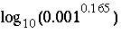

This keyword data block is used to define the amount and composition of an assemblage of exchangers. The initial composition of the exchange assemblage can be defined in two ways, (1) explicitly by listing the composition of each exchange component or (2) implicitly, by specifying that each exchanger is in equilibrium with a solution of fixed composition. The exchange master species, stoichiometries, and log K 's for the exchange reactions are defined with the keywords EXCHANGE_MASTER_SPECIES and EXCHANGE_SPECIES. The number of exchange sites can be fixed; can be related to the amount of a phase in a phase assemblage; or can be related to the amount of a kinetic reactant.
Line 0: EXCHANGE 10 Measured exchange composition Line 1a: CaX2 0.3 Line 1b: MgX2 0.2 Line 1c: NaX 0.5 Line 2a: CaY2 Ca-Montmorillonite equilibrium_phase 0.165 Line 2b: NaZ Kinetic_clay kinetic_reactant 0.1
Line 0: EXCHANGE [ number ] [ description ]
EXCHANGE is the keyword for the data block.
number --Positive number to designate the following exchange assemblage and its composition. A range of numbers may also be given in the form m-n , where m and n are positive integers, m is less than n , and the two numbers are separated by a hyphen without intervening spaces. Default is 1.
description --Optional comment that describes the exchanger.
Line 1: exchange formula, amount
exchange formula --Exchange species including stoichiometry of exchange ion and exchanger.
amount --Quantity of exchange species, in moles.
Line 2: exchange formula, name, [( equilibrium_phase or kinetic_reactant)] , exchange_per_mole
exchange formula --Exchange species including stoichiometry of exchange ion and exchange site(s). The exchange formula must be charge balanced; if no exchange ions are included in the formula, then the exchange site must be uncharged.
name --Name of the pure phase or kinetic reactant that has this kind of exchange site. If name is a phase, the amount of the phase in an EQUILIBRIUM_PHASES data block with the same number as this exchange number (10, in the example data block) will be used to determine the number of exchange sites. If name is a kinetic reactant, the amount of the reactant in a KINETICS data block with the same number as this exchange number (10, in the example data block) will be used to determine the number of exchange sites. Some care is needed in defining the stoichiometry of the exchange species if the exchangeable ions are related to a phase or kinetic reactant. The assumption is that some of the ions in the pure phase or kinetic reactant are available for exchange and these ions are defined through one or more entries of Line 2. The stoichiometry of the phase (defined in a PHASES data block) or kinetic reactant (defined in a KINETICS data block) must contain sufficient amounts of the exchangeable ions. From the example data block, Line 2a, there must be at least 0.165 mol of calcium per mole of Ca-Montmorillonite. From the example data block, Line 2b, there must be at least 0.1 mol of sodium per mole of the reactant "kinetic_clay".
equilibrium_phase or kinetic_reactant--If equilibrium_phase is used, the name on the line is a phase defined in an EQUILIBRIUM_PHASES data block. If kinetic_reactant is used, the name on the line is the rate name for a kinetic reactant defined in a KINETICS data block. Optionally, e or k, only the first letter is checked. Default is equilibrium_phase.
exchange_per_mole --Number of moles of the exchange species per mole of phase or kinetic reactant, unitless (mol/mol).
Line 1 may be repeated to define the entire composition of each exchanger. This example data block defines the amount and composition of three exchangers, X, Y, and Z. Line 2 should be entered only once for each type of exchange site. The total number of exchange sites of X is 1.5 mol and the total concentrations of calcium, magnesium, and sodium on exchanger X are 0.3, 0.2, and 0.5 mol, respectively. When the composition of the exchanger is defined explicitly, such as in this example data block, the exchanger will almost certainly not be in equilibrium with any of the solutions that have been defined. Any batch reaction that includes an explicitly defined exchanger will produce a reaction that causes change in solution and exchange composition.
Exchanger Y is related to the amount of Ca-Montmorillonite in EQUILIBRIUM_PHASES 10, where 10 is the same number as the exchange-assemblage number. If m represents the moles of Ca-Montmorillonite in EQUILIBRIUM_PHASES 10, then the number of moles of exchangeable component CaY 2 is 0.165 m , and the total number of exchange sites (Y) is 0.33 m (0.165x2). The stoichiometry of Ca must be at least 0.165 in the formula for Ca-Montmorillonite. During batch-reaction simulations the exchange composition, including the moles of Ca exchanged, will change depending on competing species defined in EXCHANGE_SPECIES. In addition, the moles of Ca-Montmorillonite in EQUILIBRIUM_PHASES 10 may change, in which case the total moles of the exchange sites (Y) will change.
Exchanger Z is related to the amount of a kinetic reactant that dissolves and precipitates according to a rate expression named "kinetic_clay". The formula for the kinetic reactant is defined in KINETICS 10, where 10 is the same number as the exchange-assemblage number. If m represents the moles of kinetic_clay in KINETICS 10, then the number of moles of exchangeable component NaZ is 0.1 m , which is equal to the total number of exchange sites. The stoichiometry of Na must be at least 0.1 in the formula for the kinetic reactant. The exchange composition will change during reaction calculations, depending on competing species defined in EXCHANGE_SPECIES. In addition, the moles of kinetic_clay in KINETICS 10 may change, in which case the total moles of the exchange sites (Z) will change.
Line 0: EXCHANGE 1 Exchanger in equilibrium with solution 1 Line 1a: X 1.0 Line 1b: Xa 0.5 Line 2: CaY2 Ca-Montmorillonite equilibrium_phase 0.165 Line 3: -equilibrate with solution 1
Line 0: EXCHANGE [ number ] [ description ]
exchange site --Only the name of the exchange site needs to be entered.
amount --Quantity of exchange site, in moles.
Line 2: exchange formula, name, [( equilibrium_phase or kinetic_reactant)] , exchange_per_mole (same as example data block 1).
-equilibrate--This string at the beginning of the line indicates that the exchange assemblage is defined to be in equilibrium with a given solution composition. Optionally, equil, equilibrate, or -e[ quilibrate].
number --Solution number with which the exchange assemblage is to be in equilibrium. Any alphabetic characters following the identifier and preceding an integer ("with solution" in line 1) are ignored.
The order of lines 1, 2, and 3 is not important. Line 3 should occur only once within the data block. Lines 1 and 2 may be repeated to define the amounts of other exchangers, if more than one exchanger is present in the assemblage. Example data block 2 requires the program to make a calculation to determine the composition of the exchange assemblage. The calculation will be performed before any batch-reaction calculations to determine the concentrations of each exchange component [such as CaX 2, MgX 2, or NaX (from the default database) provided calcium, magnesium, and sodium are present in solution] that would exist in equilibrium with the specified solution (solution 1 in this example data block). The composition of the solution will not change during this calculation. When an exchange assemblage (defined as in example data block 1 or example data block 2) is placed in contact with a solution during a batch reaction, both the exchange composition and the solution composition will adjust to reach a new equilibrium.
The exchange ions given by the formulas in Lines 2 are not used in the initial exchange-composition calculation. However, the definition of the exchange ions is important for batch-reaction and transport calculations. As the reactant, either a pure phase or a kinetic reactant, dissolves or precipitates, the number of exchange sites varies. Any new sites are initially filled with the exchangeable ions given in Lines 2. When exchange sites are removed, for example when a pure phase dissolves, then the net effect is to subtract from the pure phase formula the amount of the exchange ions defined in Lines 2 and add an equivalent amount of ions as defined by the exchanger composition. As an example, suppose some Ca-montmorillonite forms. Initially, calcium is in the exchange positions, but sodium replaces part of the calcium on the exchanger. When the montmorillonite dissolves again, the calcium in the formula for the phase is added to solution, the exchange ion (calcium from Line 2) is removed from solution, and the sodium and calcium from the exchanger is added to solution; the net effect is dissolution of (Na, Ca)-montmorillonite. Note that equilibrium for Ca-montmorillonite always uses the same mass-action equation, which includes only calcium, even though the composition of the phase is changing. Note also that this formulation implies that a pure Na-montmorillonite can never be attained because calcium must always be present to attain equilibrium with Ca-montmorillonite.
It is possible to realize a complete exchange of sodium and calcium by defining Y without cations under EXCHANGE, and a new equilibrium with only the structural ions of montmorillonite under PHASES. The combined reaction of exchanger and equilibrium phase must be electrically neutral. In the example data block, the montmorillonite would be defined with a positive charge deficit of 0.165. When montmorillonite forms, the exchange sites Y increase in proportion and take cations from solution to exactly balance the charge deficit. Note that log_k for montmorillonite is adjusted by  to account for an estimated contribution of 1 mmol/kgw Ca in solution. Yet another possibility is to use the capabilities of the SOLID_SOLUTIONS data block to define a variable composition solid solution between calcium and sodium montmorillonite end members.
EXCHANGE 1 Exchanger in equilibrium with solution 1 Y Montmorillonite equilibrium_phase 0.165 -equilibrate with solution 1 PHASES -no_check # must use no_check because of unbalanced equation Montmorillonite # Montmorillonite has 0.165 mol Y-/mol Al2.33Si3.67O10(OH)2 + 12 H2O = 2.33 Al(OH)4- + 3.67 H4SiO4 + 2 H+ log_k -44.532 #Assume a Ca = 0.001 at equilibrium delta_h 58.373 kcal
An exchanger can be defined with a fixed number of sites initially, but through special definition of a kinetic reactant, the number of sites can vary with reaction progress. Concentration changes in the number of exchange sites can be included in the KINETICS keyword, under -formula. The combination of exchanger and kinetic reaction must be neutral.
EXCHANGE 1 # Z+ is related to Goethite, initial amount is 0.2 * m_go = 0.02 Z 0.02 -equil 1 KINETICS 1 # Z has a charge of +1.0, Fe(OH)2+ sorbs anions. -formula FeOOH 0.8 Fe(OH)2 0.2 Z -0.2 m 0.1
After a batch reaction has been simulated, it is possible to save the resulting exchange assemblage composition with the SAVE keyword. If the new composition is not saved, the exchange assemblage composition will remain the same as it was before the batch reaction. After it has been defined or saved, the exchange assemblage can be used in subsequent simulations through the USE keyword.
EQUILIBRIUM_PHASES, EXCHANGE_MASTER_SPECIES, EXCHANGE_SPECIES, KINETICS, SAVE exchange, and USE exchange.